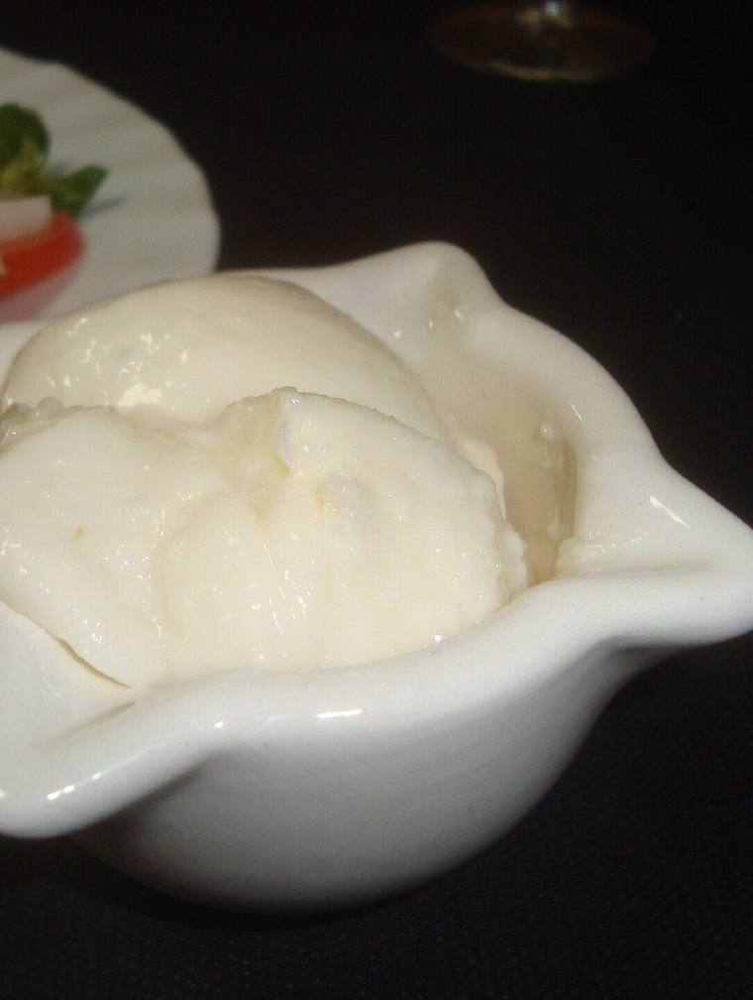

Sauces

Sauces
Aïoli
La pommade d’ail de Provence
Préparation : 15 min
Ingrédients (pour 6 personnes)
- 3 gousses d’ail
- 1 jaune d’œuf
- 20 cl d’huile d’olive
- sel
- jus de citron (facultatif)
Quantités adaptées. Les temps de cuisson ne sont pas recalculés.
- Peler et dégermer l’ail, le piler au mortier en pommade.
- Ajouter le jaune et une pincée de sel, bien mélanger.
- Verser l’huile très lentement en tournant toujours dans le même sens, jusqu’à ce que le pilon tienne debout.
- Finir d’un trait de citron si on veut, mettre au froid.
À conserver au froid, jamais au placard
Au réfrigérateur entre 0 et 4 °C : 24 heures au plus. Ne pas congeler. Œuf cru : préparer au plus près du repas, jamais pour les jeunes enfants, femmes enceintes, personnes âgées ou fragiles, sauf avec de l’œuf pasteurisé.
AstucePour un grand aïoli : morue pochée, bulots, œufs durs, pommes de terre, carottes, haricots verts et chou-fleur.
D’après ProvenceWeb, l’aïoli provençal. Texte reformulé.